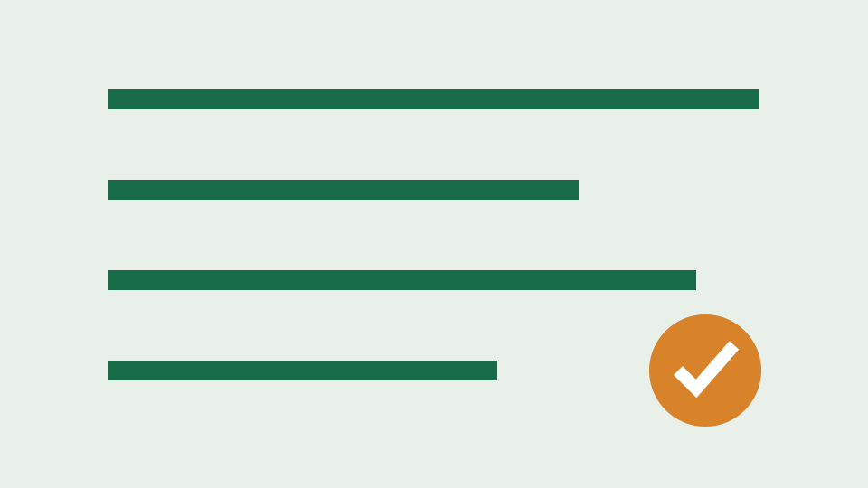

小火箭 Shadowrocket 新手使用指南：界面、节点与连接步骤
从合法来源安装 Shadowrocket 后，了解订阅、节点、规则和连接状态的基础操作，并学习常见问题的安全排查顺序。
小火箭Shadowrocket新手教程
收录 35 篇小火箭、Clash、Platy、机场与 VPN 基础、故障排查和风险合规指南。
按搜索意图组织，每篇聚焦一个具体问题。内容强调合法合规、来源核验、凭据保护和可复核排查。
从合法来源安装 Shadowrocket 后，了解订阅、节点、规则和连接状态的基础操作，并学习常见问题的安全排查顺序。
说明 Shadowrocket 导入本人订阅链接的通用流程、更新方法和隐私注意事项，避免泄露订阅凭据。
针对 Shadowrocket 更新超时、返回空节点或提示链接无效的情况，提供不破坏现有配置的排查顺序。
解释 Shadowrocket 节点延迟、超时与实际体验的关系，帮助用户正确选择节点而不是只追求最低数字。
用日常场景解释 Shadowrocket 的规则、直连与全局处理方式，并说明误用全局模式可能带来的兼容性问题。
介绍按需连接的适用场景、触发条件和排错方法，避免错误规则导致反复连接或影响本地网络。
解释 Clash 系列客户端常见的配置文件、代理组、规则模式和系统代理概念，帮助新手建立正确操作顺序。
提供 Clash 系列客户端导入订阅、更新配置和保护访问令牌的通用方法，不依赖特定分支界面。
比较 Clash 常见运行模式的用途、风险和诊断方法，说明日常使用为何通常选择规则模式。
整理 Clash 更新订阅时常见的超时、格式错误、空配置和认证失败现象及安全排查步骤。
解释 Clash 开启后域名解析失败、部分网站打不开或应用表现不一致时的安全诊断思路。
说明 TUN 模式与系统代理的区别、何时可能需要，以及启用前应了解的权限、兼容性和回退方法。
梳理常见 Clash 相关项目名称、界面与内核的关系，提醒用户核对官方维护状态和下载渠道。
针对“Platy”相关搜索中可能出现的名称歧义，提供核对产品身份、官方来源和适用平台的方法。
在不假设具体版本界面的前提下，说明 Platy 类客户端添加本人订阅、更新配置和保护令牌的通用流程。
提供 Platy 类客户端无法连接时的通用排查框架，并强调根据实际版本官方文档核对菜单名称。
解释中文语境中“机场”、VPN、代理客户端和订阅之间的关系，帮助新手避免概念混用。
解释订阅链接包含的信息、更新机制和泄露风险，并提供安全保存与重置建议。
用通俗语言解释节点位置、传输线路、协议和客户端兼容性的关系，帮助用户读懂套餐页面。
说明节点倍率如何影响套餐流量消耗，并给出简单计算方法和购买前核对项目。
解释延迟、抖动和丢包分别影响什么场景，以及为什么应结合多次样本判断节点质量。
提供可复核的节点测速方法，强调固定条件、多次采样和保存限制说明，避免单张测速图误导。
解释流媒体地区识别、节点出口和平台策略变化，提醒用户不要把解锁承诺视为长期保证。
解释“设备数”“同时在线连接数”和“IP 数量”常见差别，避免家庭多设备使用时触发限制。
比较月付、季付、年付和一次性流量包的成本、灵活性和风险，帮助不同用户选择周期。
把价格、线路、稳定性、设备数、售后、退款和风险整合为一套可执行的机场选择流程。
解释晚高峰拥堵的可能原因，并给出连续七天观察连接稳定性的简单记录表思路。
提供节假日前后观察节点可用率、公告和售后响应的方法，帮助用户区分短时波动与持续问题。
说明客户端刷新订阅的通用步骤，以及节点列表为空、旧节点残留或更新后不可用时的处理方法。
针对所有节点超时、客户端无网络或突然失效，提供从本地网络到服务状态的五步排查法。
解释连接成功但域名无法访问、部分应用正常部分异常时，如何检查 DNS、系统代理和规则冲突。
列出购买网络服务前应核对的退款、续费、流量和服务中断条款，并建议保存结算证据。
从价格、流量、倍率、售后、退款和运营持续性角度分析低价套餐，避免只凭“每月几元”决策。
围绕“跑路机场”高频搜索词，整理服务失联前可能出现的信号和降低损失的方法，不对具体服务作未经证实的指控。
提供中性的合规检查框架，提醒用户了解所在地法律、单位网络政策、平台条款和数据责任。

用中性语言解释套餐周期、延迟、吞吐、丢包、服务等级与工单等常见术语，帮助新手读懂产品页面。